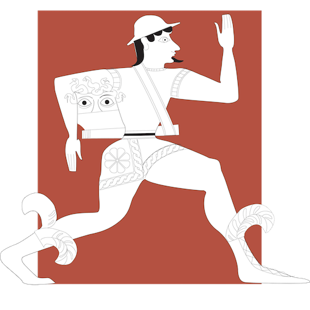

Passage
Text
Word-level heatmapNo matchSome reuseFrequent reuseSelect a word to inspect its passages.

Open Greek and Latin in the Harvard Institutional Books 1.0 Million Book Library (powered by Passim)
Greek literature
Whole-work distribution
All languages · select a region to move between passages
Ranked reuse spans
Passage